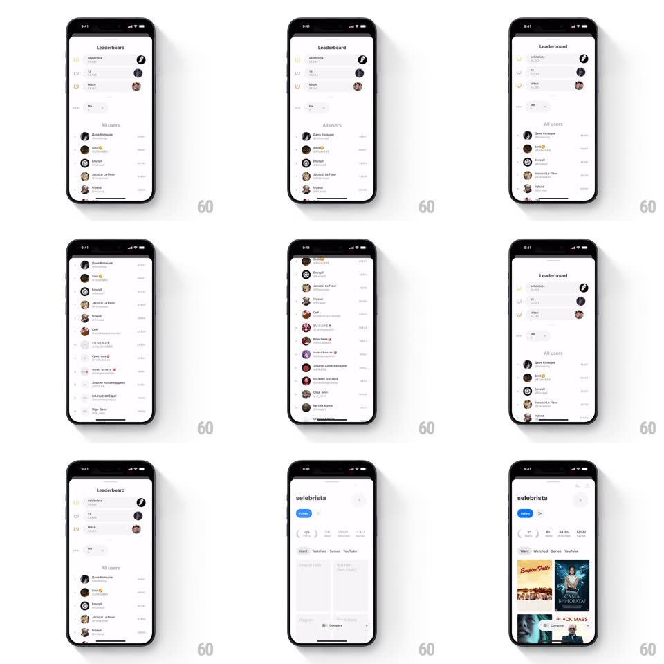

Media
Frame-by-frame

Rebuild this interaction 1:1: Must's leaderboard profile sheet - tap a leaderboard row and a profile bottom sheet slides up, spinning briefly before its content staggers in.

Rebuild this interaction 1:1: Must's leaderboard profile sheet - tap a leaderboard row and a profile bottom sheet slides up, spinning briefly before its content staggers in. ## Integration Integration: stack-agnostic spec - springs given as stiffness/damping, timed motions as duration + curve; map every value to your framework and animation library of choice. ## Scene A leaderboard screen: a top-3 podium block (ranked rows with medal indicators) above an "All users" list of avatar rows with names, handles, and scores. Tapping any row opens that user's profile as a bottom sheet. ## Motion spec Pattern: bottom sheet with loading-to-content reveal. - Tap a row: the row flashes a pressed state (background to gray-100, 100ms) and the sheet rises from the bottom (spring ~380/28, ~450ms travel) to three-quarter height, scrimming the leaderboard behind it (black 0 to 40%, 250ms). - While the profile loads, the sheet shows a centered spinner (rotating ring, 1 rev per 800ms) for up to ~600ms. - Content reveal: the spinner fades out (150ms) and the profile sections stagger in top-down - header (avatar + name) first (translateY 14px + fade, 250ms), then stats row (200ms, 80ms later), then list content (80ms later again). - The sheet is draggable: it tracks the finger 1:1 downward, the scrim fading proportionally; release past 40% dismisses (accelerating slide-out, 300ms), otherwise it springs back up. - The leaderboard behind parallaxes up slightly (translateY -8px) while the sheet is open, returning on dismiss. ## Calibration - The spinner-to-content swap must be a crossfade, never a layout jump - reserve the content's vertical space during loading. - Sheet corner radius stays 16px throughout the drag. ## Reduced motion Sheet fades in at full height; content appears without stagger. ## Don't miss - The tapped row is the context: keep the scrim translucent enough that the leaderboard stays legible behind it. - Scores and handles in the list are right-aligned in a lighter gray - hierarchy matters more than density.